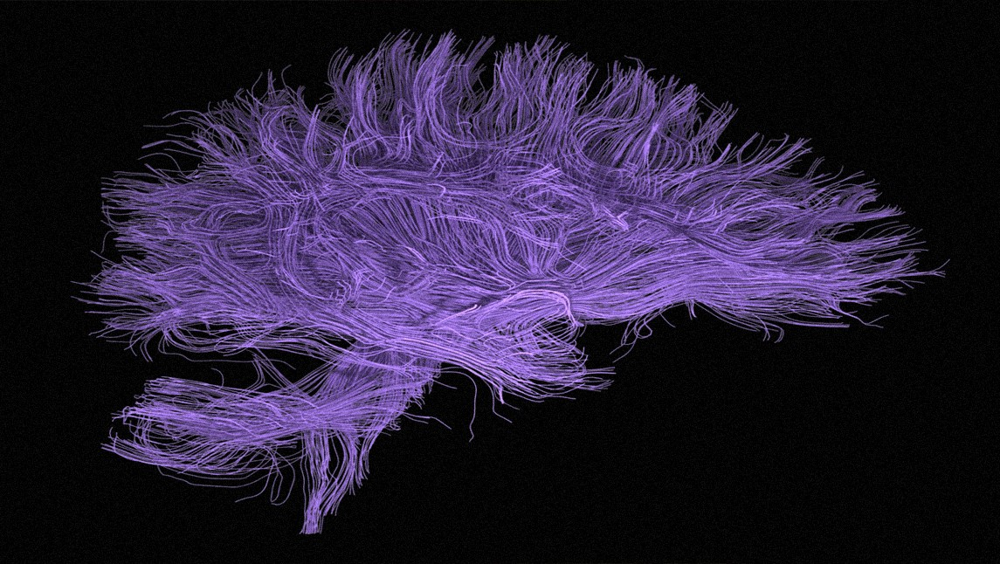

El cerebro humano mantiene un constante intercambio energético con el resto de los cerebros, a través de la creación y expansión de Campos Neuronales. Estos campos crean una red de interacciones, sostenidas por la propia estructura del Espacio.
Se conoce a esta red como HIPERCAMPO, la cual aloja la actividad cerebral de la especie humana. En el abstracto, representa el sustrato energético de la Consciencia Planetaria.
Entonces, cada cerebro recibe influencias del Hipercampo, lo que alimenta su Consciencia Individual, pero al mismo tiempo, cada cerebro afecta a todo el Hipercampo, modificando su estructura.
Pasando en limpio y haciendo analogía: los cerebros humanos FUNCIONAN EN RED, tal como internet. Frecuencialmente, descargan información de la red (download), y suben información a la red (upload). Cada cerebro representa un nodo de información independiente aunque interconectado.
La novedad es que la información no es privada, porque estamos conectadxs a la misma red (y posiblemente estamos más interconectadxs de lo que creemos) -algo parecido a lo que sucede en el reino fungi o en muchas especies de árboles, a través de sus redes físicas y sutiles de cooperación.